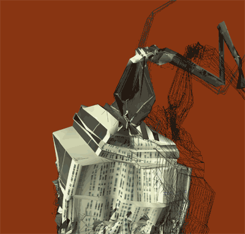
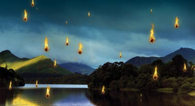

|
| |
SEPTEMBERThursday, September 18 |
|
| 
Mark Napier, Cyclops, generative animation. | Mark Napier explores the excitement and anxiety of this moment in history, as we transition from a world of physical objects to a world dominated by electricity, magnetism and light: the raw materials of digital media. In the Cyclops Series he created a "soft" Empire State Building: a 3D model of the famous skyscraper that appears to soften and melt, writhing almost organically, then struggle to return to it's original form. Inspired by Cubism -- a form that arose during another period of rapid transition -- these artworks combine aspects of painting, sculpture, photography and animation, bringing these forms together to represent an object that is immaterial, ephemeral, almost cloud-like, yet completely durable and real in it's own right. Mark Napier, painter-turned-new-media-artist, is a pioneer of digital and internet art. Through his early web-based artworks such as "The Shredder", "Digital Landfill", and "Feed", Napier explores the potential of worldwide networks as a public space for art. He uses code as an expressive form, and the Internet as his exhibition space and laboratory. Napier's work has been included in seminal exhibitions of Digital Art including the Whitney Museum of American Art's Data Dynamics exhibition and The San Francisco Museum of Art's 010101: Art in the Age of Technology. |
| 
Kelly Richardson, Exiles of the Shattered Star, video. | Kelly Richardson's video installations adopt the use of cinematic language to investigate notions of constructed environments and the blurring of the real versus the unreal. She creates contemplative spaces which offer visual metaphors for the sensations associated with the hugely complicated world we have created for ourselves, magnificent and equally dreadful. In Exiles of the Shattered Star, Richardson presents a beautiful countryside showered with what appear to be remnants of another place. Inhabiting a place between fantasy and reality, Exiles of the Shattered Star evokes trepidation and fascination in equal measures. Kelly Richardson was born in Canada in 1972. She studied fine art at the Ontario College of Art & Design and media studies at the Nova Scotia College of Art and Design (MFA studies). She participated in numerous international exhibitions including most recently The Cinema Effect: Illusion, Reality and the Moving Image at the Hirshhorn Museum and Sculpture Garden, USA (2008) and the Busan Biennale, South Korea (2008). She lives and works in the UK. |